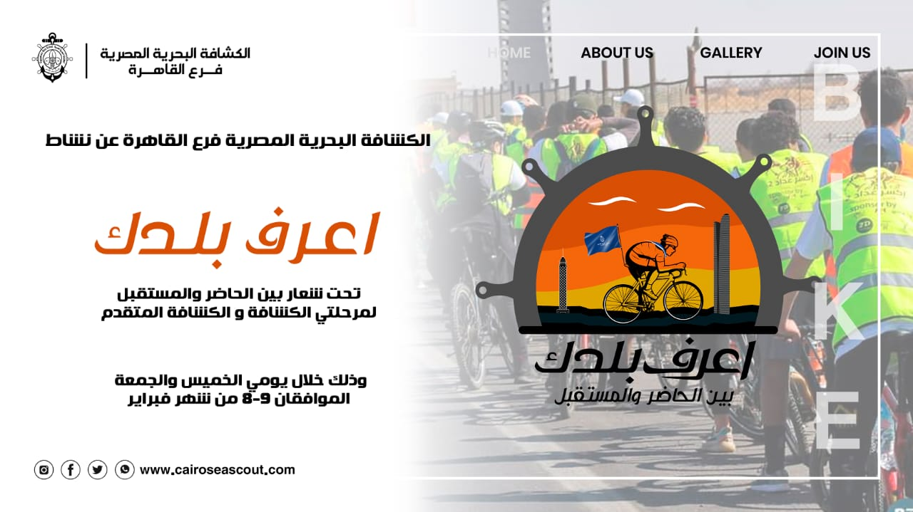

At Cairo Sea Scouts, we offer a range of scouting programs that focus on leadership, teamwork, and nautical skills. Our programs include:
Immerse yourself in the world of boating and seamanship. Our experienced instructors provide hands-on training in navigation, knot tying, and boat handling. Whether you're a beginner or an experienced sailor, there's always something new to learn.
As Sea Scouts, we are committed to making a positive impact on our community. Through various service projects, we contribute to environmental conservation, disaster relief, and community development. Join us in making a difference!
"Joining Cairo Sea Scouts has been a transformative experience. I've gained valuable skills, made lifelong friends, and developed a deep appreciation for the sea."